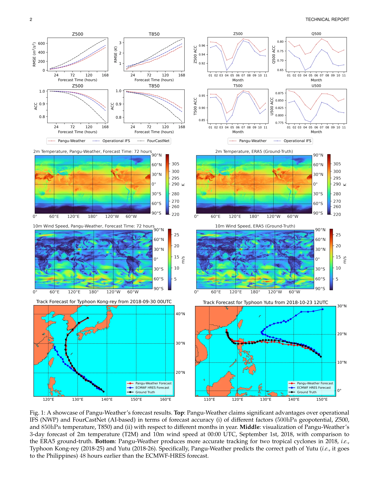
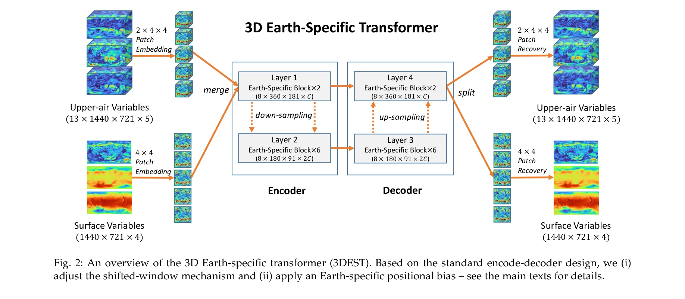

저자: Kaifeng Bi, Lingxi Xie, Hengheng Zhang, Xin Chen, Xiaotao Gu, Qi Tian | 날짜: 2022 | DOI: 10.48550/ARXIV.2211.02556

Fig. 1: A showcase of Pangu-Weather’s forecast results. Top: Pangu-Weather claims significant advantages over operational
Pangu-Weather는 3D Earth-specific Transformer (3DEST) 아키텍처와 hierarchical temporal aggregation을 통해 처음으로 기존 numerical weather prediction (NWP) 방법을 능가하는 AI 기반 날씨 예측 시스템을 제시한다.
Fig. 1: A showcase of Pangu-Weather’s forecast results. Top: Pangu-Weather claims significant advantages over operational

Fig. 2: An overview of the 3D Earth-specific transformer (3DEST). Based on the standard encode-decoder design, we (i)
총평: Pangu-Weather는 AI 기반 날씨 예측이 전통적 NWP를 초월할 수 있음을 처음 입증한 획기적 연구로, 3D 아키텍처와 hierarchical temporal aggregation 기법의 효과성을 명확히 보여주며 실무 적용 가능성과 높은 사회적 가치를 지닌다.